Цель исследования - построить воспроизводимую систему численного моделирования движения объектов на низкой околоземной орбите (НОО, LEO), пригодную для задачи трекинга космического мусора наземными радиолокационными средствами. Практический сценарий такой: радар получает несколько последовательных измерений объекта, после чего требуется быстро и достаточно точно спрогнозировать траекторию на несколько витков вперед. Такой прогноз нужен для повторного наведения, поиска объекта в следующем окне наблюдения и уточнения его координат.
Для НОО характерное время одного витка составляет примерно 90-105 минут. Поэтому в работе основное внимание уделялось горизонту прогноза до 12 часов, что соответствует нескольким последовательным виткам. В качестве метрик использовались:
|dr|, km;|dv|, km/s;Для оценки требуемой точности прогноза полезно понимать не только ошибку модели, но и характерную пространственную плотность объектов. В открытых источниках обычно публикуются не точные трехмерные плотности по высотам, а интегральные оценки популяции по размерам и графики распределений. Поэтому ниже приведена оценка порядка величины, а не operational-модель среды типа ORDEM или MASTER.
Использованные источники:
По сводкам ESA, пересказанным и агрегированным в открытой литературе, порядок популяций следующий: около 5.4e4 объектов больше 10 cm, около 1.2e6 объектов в диапазоне 1-10 cm, около 1.4e8 объектов в диапазоне 1 mm-1 cm. Объекты крупнее 10 cm в основном относятся к отслеживаемой или потенциально отслеживаемой популяции; сантиметровые и миллиметровые объекты в основном не сопровождаются индивидуально, но важны для оценки риска столкновений.
Характерную длину L оценивали из объема сферической оболочки:
V = 4*pi/3 * ((R_E + h2)^3 - (R_E + h1)^3)
L = (V / N)^(1/3)Здесь R_E = 6371 km, h1, h2 - границы высотной оболочки, N - число объектов в этой оболочке. Если грубо распределить всю модельную популяцию равномерно по НОО 160-2000 km, получаются такие значения:
| Размер объектов | Принятое число объектов | Характерная длина в оболочке 160-2000 km |
|---|---|---|
>10 cm |
5.4e4 |
~288 km |
1-10 cm |
1.2e6 |
~102 km |
1 mm-1 cm |
1.4e8 |
~21 km |
Если тот же расчет сделать для более узкой и загруженной области 500-900 km, получаются меньшие расстояния:
| Размер объектов | Принятое число объектов | Характерная длина в оболочке 500-900 km |
|---|---|---|
>10 cm |
5.4e4 |
~167 km |
1-10 cm |
1.2e6 |
~59 km |
1 mm-1 cm |
1.4e8 |
~12 km |
Эти числа нельзя трактовать как реальные межобъектные расстояния в конкретной орбитальной плоскости: объекты распределены неравномерно по высоте, наклонению, долготе узла и фазе. Тем не менее порядок величины показывает, что ошибка прогноза в несколько километров существенно меньше средней трехмерной характерной длины для отслеживаемых объектов >10 cm. Для задачи повторного поиска это важно: километровая точность не гарантирует отсутствие ложных ассоциаций, но резко сужает область поиска по сравнению с десятками и сотнями километров.
Состояние объекта задается шестимерным вектором в СИ:
y = [r_x, r_y, r_z, v_x, v_y, v_z],где r - геоцентрический радиус-вектор, m, v - скорость, m/s. Интегрируется система:
dr/dt = v
dv/dt = a_totalНабор сил переключается через ForceModelConfig в dynamics/force_models.py. Это было принципиально для исследования: один и тот же код позволял включать и отключать отдельные возмущения, сравнивая вклад каждой модели.
Базовая гравитационная модель - центральное поле сферической Земли:
a_E = -mu_E * r / |r|^3где mu_E = 3.986004418e14 m^3/s^2. Это дает основное кеплерово движение, но не воспроизводит прецессию орбиты и долготные неоднородности поля.
Первое улучшение - аналитическая поправка J2, описывающая сплюснутость Земли. В коде есть два режима:
j2_frame="gcrs_fixed_axis" - старый воспроизводимый режим, где ось z фиксирована в GCRS;j2_frame="itrs_body_fixed" - физически более корректный режим: положение переводится в ITRS, ускорение считается в связанной с Землей системе и затем возвращается в GCRS.Продвинутая модель - статическое поле EGM2008. Коэффициенты читаются из локального ICGEM .gfc файла data/cache/egm2008.gfc. Ускорение от сферических гармоник считается в body-fixed ITRS и поворачивается обратно в GCRS. В экспериментах использовались степени и порядки (2,2), (4,4), (8,8), (12,12), (24,24). В итоговой лучшей модели использован вариант (8,8).
Важно: J2 и EGM2008 (2,2) - не одно и то же. J2 - осесимметричная аналитическая поправка с одним коэффициентом. EGM2008 (2,2) содержит полный набор гармоник степени 2 и порядка до 2: C20, C21, S21, C22, S22. Поэтому переход от J2 к EGM2008 (2,2) добавляет долготную неоднородность гравитационного поля Земли.
Сопротивление атмосферы моделируется баллистической формулой:
a_drag = -1/2 * Cd * A / m * rho * |v_rel| * v_rel
v_rel = v - omega_E x rЗдесь Cd - коэффициент сопротивления, A - эффективная площадь, m^2, m - масса, kg, rho - плотность атмосферы, kg/m^3. Скорость берется относительно атмосферы, вращающейся вместе с Землей.
В проекте реализованы два варианта плотности:
rho(h) = rho0 * exp(-(h-h0)/H);nrlmsise00 и доступны входные индексы солнечной и геомагнитной активности.Экспоненциальная модель проста и воспроизводима, но физически груба для высот НОО. NRLMSISE-00 учитывает широту, долготу, высоту, время, солнечную и геомагнитную активность, поэтому является более реалистичной, но зависит от качества входных индексов.
Притяжение Солнца и Луны реализовано как дифференциальное третье тело в геоцентрической системе:
a_body = mu_b * ((r_b - r) / |r_b - r|^3 - r_b / |r_b|^3)Давление солнечного излучения считается в cannonball-приближении через Cr*A/m. Для тени Земли доступны варианты none, cylindrical, conical. Также в коде есть простые модели собственного ИК-излучения Земли, твердотельных приливов и Schwarzschild-релятивистской поправки. В additive study эти силы проверялись отдельно; устойчивого значимого улучшения для рассматриваемых 12-часовых прогнозов они не дали.
В проекте доступны два интегратора:
rk4_fixed - классический RK4 с фиксированным шагом;dop853 - адаптивный интегратор scipy.integrate.solve_ivp с методом DOP853.В ранних экспериментах переход к dop853 дал заметное отличие от фиксированного RK4. В итоговых оптимизационных ноутбуках использован dop853 с rtol = 3e-9 и вектором atol = [1e-2, 1e-2, 1e-2, 1e-5, 1e-5, 1e-5] в единицах [m, m, m, m/s, m/s, m/s].
Модель проверялась не по TLE, а по precise-orbit reference данным, содержащим координаты и скорости. Это важно: скорость бралась из внешнего POD/SP3/EOF продукта, а не восстанавливалась конечными разностями.
Использованы 6 аппаратов на НОО, для каждого около 24 часов данных:
| Спутник | Формат reference данных | Число samples | Медианная высота, km | Номинальные параметры КА |
|---|---|---|---|---|
| Sentinel-1A | ESA Sentinel EOF | 7921 | 698.5 | m=2185 kg, A=10.3 m^2, Cd=2.2, Cr=1.3 |
| Sentinel-1B | ESA Sentinel EOF | 7921 | 699.1 | m=2185 kg, A=10.3 m^2, Cd=2.2, Cr=1.3 |
| CASSIOPE / Swarm-E | SP3 | 79201 | 858.0 | m=500 kg, A=2.2 m^2, Cd=2.2, Cr=1.3 |
| Swarm B | ESA Swarm SP3 | 7921 | 512.9 | m=438 kg, A=1.1 m^2, Cd=2.2, Cr=1.3 |
| Swarm C | ESA Swarm SP3 | 7921 | 479.9 | m=438 kg, A=1.1 m^2, Cd=2.2, Cr=1.3 |
| Swarm A | ESA Swarm SP3 | 7921 | 479.9 | m=438 kg, A=1.1 m^2, Cd=2.2, Cr=1.3 |
В 1_orbit_propagation_demo.ipynb была проведена базовая демонстрация моделирования орбит и ground track. Для отчета интерактивные Plotly-графики были переведены в статические изображения без пересчета оптимизаций.
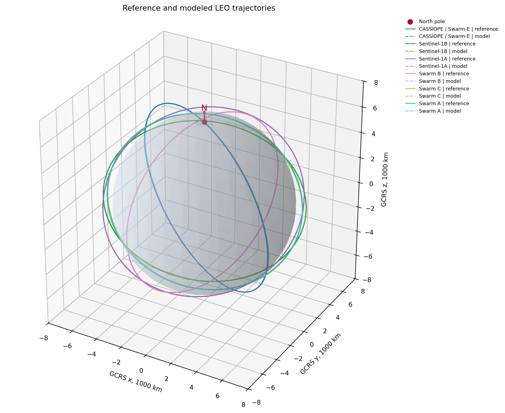
Рисунок 1. Трехмерные траектории 6 аппаратов в GCRS по данным 1_orbit_propagation_demo.ipynb. Сплошные линии соответствуют reference/POD траекториям, пунктирные линии - результату прямого моделирования; цвет задает спутник. Голубая сфера - Земля, красная стрелка N показывает направление на северный полюс.
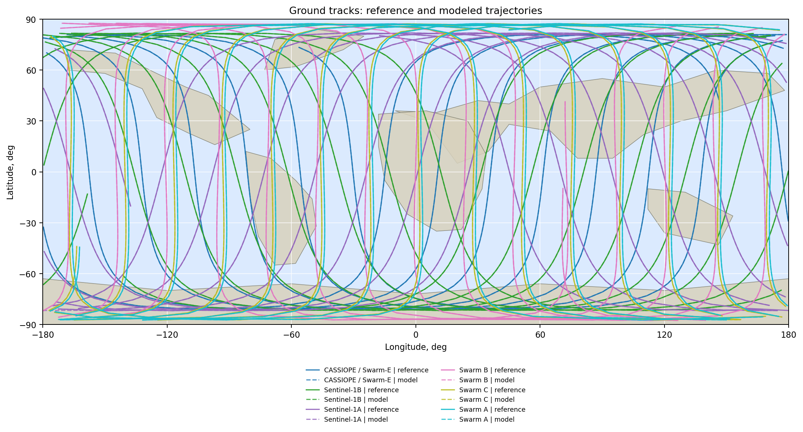
Рисунок 2. Проекции траекторий на поверхность Земли для тех же данных. Фон показывает океаны и упрощенные контуры материков. Сплошные линии - reference траектории, пунктирные линии - модель; цвет задает спутник.
В 2_prediction_error_growth_demo.ipynb исследовался рост ошибки прогноза в простом варианте модели. На графиках ниже показаны характерные ошибки по положению, компонентам residual и скорости, а также агрегирование |dr| по 100-минутным окнам.
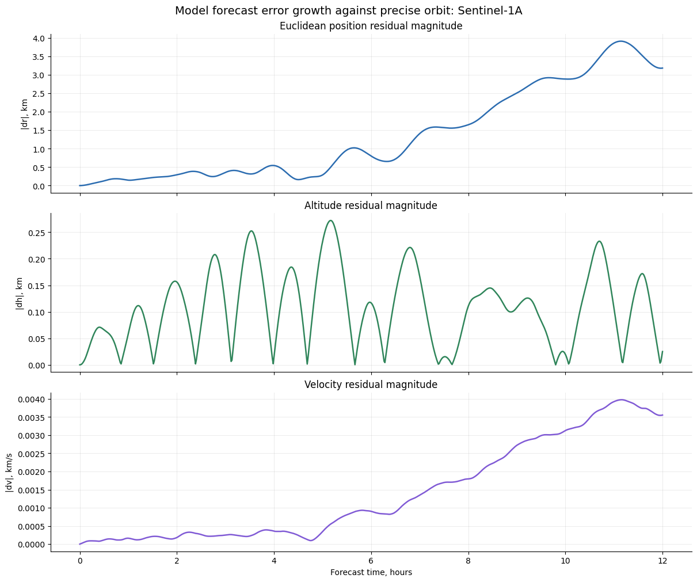
Рисунок 3. Рост ошибки прогноза для одного спутника из 2_prediction_error_growth_demo.ipynb: сверху модуль ошибки положения |dr|, ниже компоненты ошибки и ошибка скорости. Цвета кривых соответствуют метрикам, указанным в легенде самого рисунка.
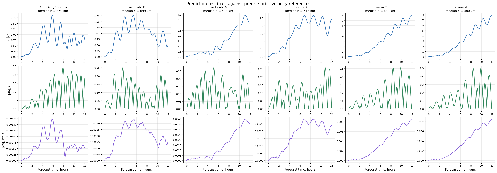
Рисунок 4. Ошибка прогноза для всех 6 спутников в простом сценарии моделирования. Каждая панель соответствует отдельному спутнику; кривые показывают ошибки положения, высоты и скорости относительно reference orbit.
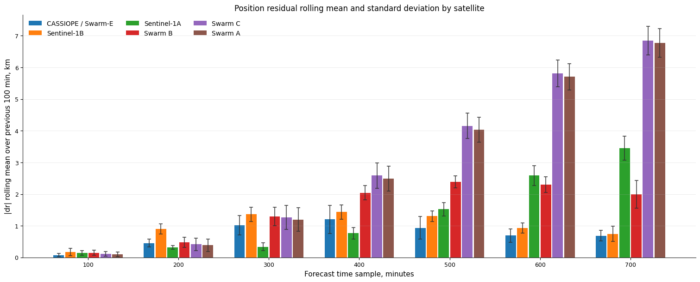
Рисунок 5. Средняя невязка |dr| по 100-минутным окнам прогноза. Цвет столбца соответствует типу спутника; вертикальные error bars показывают стандартное отклонение |dr| внутри соответствующего окна.
В 3_residual_addition_study.ipynb выполнен one-by-one addition experiment: сначала задавалась базовая конфигурация, затем в каждом сценарии менялся только один элемент модели. Это позволяет отделить вклад конкретной физической или численной поправки от остальных факторов.
Базовая модель для сравнения включала:
J2-поправку в body-fixed постановке;dop853.Проверенные модификации соответствовали следующему списку:
dop853 на фиксированный rk4_fixed.J2-модели на EGM2008.Наиболее существенные эффекты в этом эксперименте дали численная схема, гравитационное поле и, для части спутников, модель атмосферы. Тень Земли, ИК-излучение, твердотельные приливы и релятивистская поправка в текущем 12-часовом сценарии меняли residuals существенно слабее и не дали устойчивого улучшения качества прогноза.
На всех рисунках раздела 4 синий цвет соответствует baseline, а красный - варианту, где изменен ровно один элемент модели. Строки показывают |dr|, radial, along-track, cross-track и |dv|; колонки соответствуют отдельным спутникам.
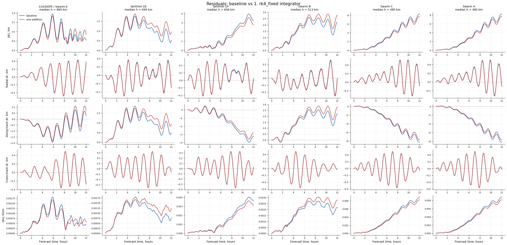
Рисунок 6. Additive study для интегратора. Baseline использует адаптивный dop853; красная кривая показывает прогноз при замене только интегратора на фиксированный rk4_fixed. Заметное изменение residuals подтверждает, что численная схема и параметры интегрирования являются частью физически значимой конфигурации модели.
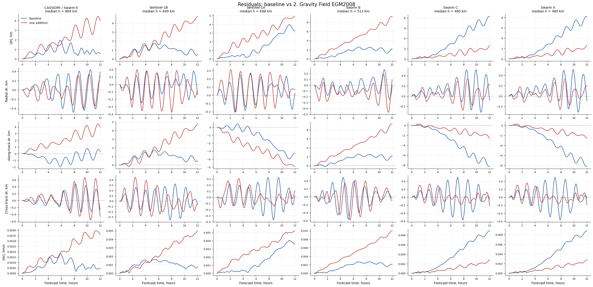
Рисунок 7. Additive study для гравитационного поля Земли. Baseline использует центральное поле и аналитическую J2-поправку; красная кривая показывает вариант с EGM2008 при неизменных остальных силах. Этот переход дает один из наиболее заметных вкладов в прогноз.
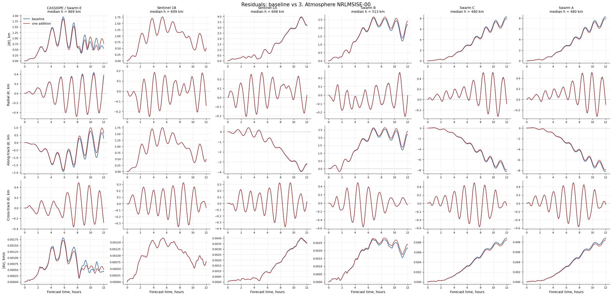
Рисунок 8. Additive study для атмосферы. Baseline использует экспоненциальную модель плотности; красная кривая показывает вариант с NRLMSISE-00. Эффект зависит от высоты, баллистического коэффициента и конкретного спутника.
Рисунок 9. Additive study для цилиндрической тени Земли. Baseline считает SRP без затенения; красная кривая включает простую цилиндрическую модель тени. На рассматриваемом горизонте вклад этой поправки мал по сравнению с гравитацией и интегратором.
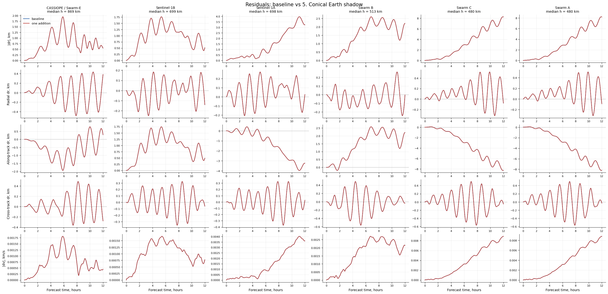
Рисунок 10. Additive study для конической тени Земли. Baseline считает SRP без затенения; красная кривая включает коническую модель с переходом через полутень. В текущем наборе орбит отличие от baseline остается небольшим.
Рисунок 11. Additive study для собственного ИК-излучения Земли. Baseline не учитывает Earth IR; красная кривая включает изотропную модель ИК-давления. Для рассматриваемых спутников вклад этой силы оказался вторичным.
Рисунок 12. Additive study для твердотельных приливов. Baseline не учитывает приливную поправку; красная кривая включает degree-2 solid Earth tides. Изменение residuals мало на фоне основных ошибок прогноза.
Рисунок 13. Additive study для Schwarzschild-релятивистской поправки. Baseline не учитывает релятивистский член; красная кривая включает его при неизменных остальных силах. На 12-часовом горизонте вклад поправки существенно меньше эффекта EGM2008 и атмосферы.
Основная идея ноутбуков серии 4_... - не просто запустить модель от последнего измерения, а уточнить начальное состояние и эффективные параметры аппарата по нескольким историческим измерениям. Рассматривались варианты N_MEASUREMENTS = 2 и N_MEASUREMENTS = 3.
Постановка оптимизации:
t = 0; прогноз строится от нее вперед на FORECAST_HOURS = 12 h.LAST_MEASUREMENT_OBSERVATION_SCALE = 0.2, чтобы прогноз от t=0 был согласован с самым свежим наблюдением.Оптимизируемые группы:
Cd*A/m, m^2/kg;Cr*A/m, m^2/kg;gravity_harmonics, third_body_sun, third_body_moon.Разные физические величины нормируются перед оптимизацией. Для наблюдений использованы сигмы 50 m по координатам и 1 m/s по скоростям. Для параметров используется логарифмическая нормировка с PARAMETER_LOG_SIGMA = log(1.5) и bounds множителей (0.2, 5.0). Это делает decision vector численно сопоставимым и не смешивает метры, m/s и безразмерные множители напрямую.
Основной локальный метод - scipy.optimize.least_squares с robust loss soft_l1. В verbose-таблице:
Cost - robust стоимость; для обычного МНК это 0.5 * sum(residuals**2), здесь используется soft_l1;Cost reduction - уменьшение стоимости относительно предыдущей итерации;Step norm - норма шага в нормированном decision vector;Optimality - мера близости к стационарной точке с учетом bounds.В простом варианте N2 (4_trajectory_tie_in_optimization_N2.ipynb) оптимизация не всегда улучшала максимум ошибки для всех спутников. Например, для CASSIOPE максимум |dr| изменился с 5.172 km до 6.093 km, но final |dr| улучшился с 3.827 km до 1.490 km. Это показало, что сама схема tie-in работоспособна, но качество сильно зависит от физической модели.
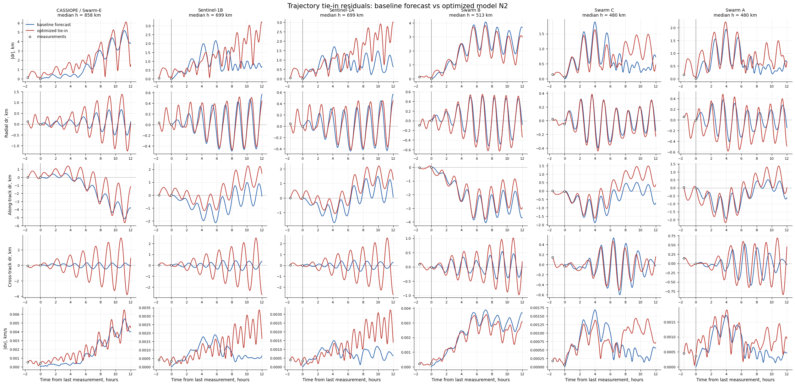
Рисунок 14. Residual visualization для простого N2 tie-in сценария из 4_trajectory_tie_in_optimization_N2.ipynb. Синий цвет - baseline forecast от последнего измерения, красный - optimized tie-in, черные маркеры - точки измерений, использованные в оптимизации.
В 4_sgp4_vs_tie_in_optimization_N2.ipynb SGP4 сравнивался с текущей физической моделью на тех же локальных reference данных. Важно: использовался не официальный TLE, а synthetic SGP4, fitted к локальным state vectors. Это честнее для сравнения на одинаковом входе, но такой fitted SGP4 не является operational TLE.
На части спутников fitted SGP4 проигрывал существенно. Например, для Sentinel-1A и Sentinel-1B в сохраненном прогоне max |dr| fitted SGP4 превысил 120 km, тогда как физическая модель оставалась на километровом уровне. Это связано с тем, что SGP4 mean elements плохо восстанавливаются из малого числа точек и чувствительны к согласованию TEME/GCRS и mean/osculating элементов.
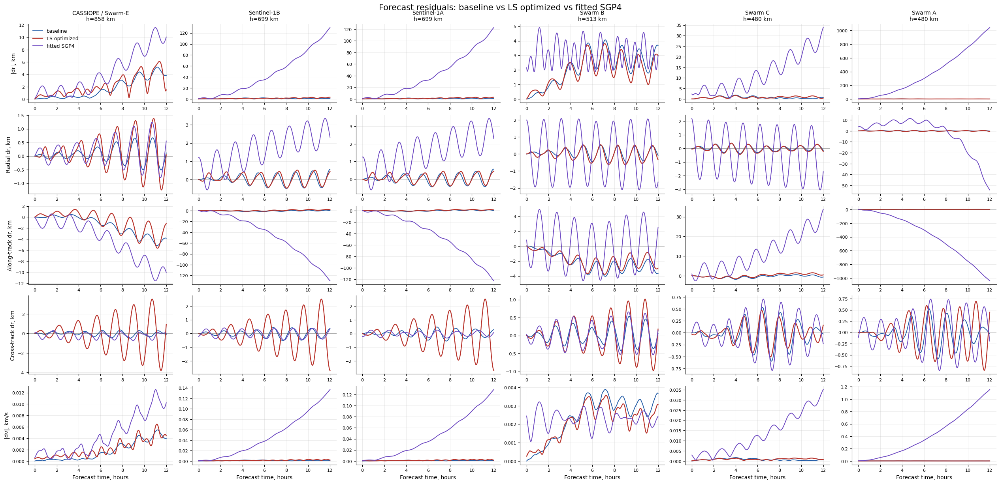
Рисунок 15. Компактное сравнение baseline физической модели, LS-optimized физической модели и fitted synthetic SGP4 из 4_sgp4_vs_tie_in_optimization_N2.ipynb. Цвета соответствуют трем моделям в легенде рисунка; сравнение выполнено относительно тех же reference orbit данных.
В 4_trajectory_tie_in_optimization_N2_diff_evol.ipynb была добавлена глобальная оптимизация scipy.optimize.differential_evolution с опциональным последующим least_squares refinement. Настройки:
DIFFERENTIAL_EVOLUTION_MAXITER = 8
DIFFERENTIAL_EVOLUTION_POPSIZE = 4
DIFFERENTIAL_EVOLUTION_TOL = 0.01
DIFFERENTIAL_EVOLUTION_SEED = 20240616
RUN_LEAST_SQUARES_AFTER_DIFFERENTIAL_EVOLUTION = TrueЭволюционный метод полезен как диагностика нестабильности loss landscape, но оказался существенно дороже. В сохраненных экспериментах локальный least_squares давал сопоставимый практический результат дешевле, поэтому для основной ветки исследования оставлен LS-подход.
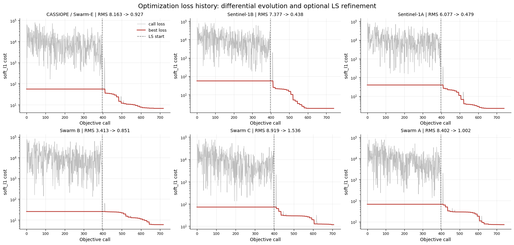
Рисунок 16. История loss в варианте differential_evolution + optional LS refinement. Серая кривая показывает значения objective на вызовах функции, красная - лучшее найденное значение, вертикальная пунктирная линия отмечает переход к локальному least_squares, если он включен.
Проверялся вариант без оптимизации скоростей (4_trajectory_tie_in_optimization_N2_no_velocity.ipynb). Идея была упростить задачу и уменьшить число степеней свободы, но устойчивого улучшения это не дало. Для части спутников final error улучшался, для части ухудшался; поэтому оставлена полная оптимизация координат и скоростей.
Также проверялся вариант N_MEASUREMENTS = 3. Результаты оказались сопоставимыми с N2, но не дали однозначного выигрыша. Для основной линии анализа оставлен N2 как более дешевый и короткий tie-in сценарий, а N3 использовался как контроль.
Наиболее сильное улучшение дала замена физической модели в ноутбуках:
4_trajectory_tie_in_optimization_N2_mipt_forces.ipynb;4_trajectory_tie_in_optimization_N3_mipt_forces.ipynb.Их конфигурация:
N_MEASUREMENTS = 2 или 3
FORECAST_HOURS = 12
PROPAGATION_STEP_SECONDS = 120
earth_gravity_model = "egm2008"
gravity_max_degree = 8
gravity_max_order = 8
density_model = "nrlmsise00"
third_body_sun = True
third_body_moon = True
solar_radiation_pressure = True
srp_shadow_model = "none"
earth_radiation_model = "none"
relativity_model = "none"
tide_model = "none"
integrator = "dop853"
MAX_NFEV = 35Для N2 MIPT-forces сохраненная сводка:
| Спутник | max |dr| baseline, km |
max |dr| optimized, km |
final |dr| baseline, km |
final |dr| optimized, km |
|---|---|---|---|---|
| CASSIOPE / Swarm-E | 2.888 | 2.198 | 2.354 | 1.072 |
| Sentinel-1B | 5.933 | 2.067 | 5.093 | 1.530 |
| Sentinel-1A | 5.795 | 1.431 | 4.511 | 1.126 |
| Swarm B | 2.316 | 1.463 | 2.143 | 0.673 |
| Swarm C | 5.465 | 1.052 | 5.465 | 0.402 |
| Swarm A | 5.432 | 1.488 | 5.432 | 0.498 |
Для N3 MIPT-forces:
| Спутник | max |dr| baseline, km |
max |dr| optimized, km |
final |dr| baseline, km |
final |dr| optimized, km |
|---|---|---|---|---|
| CASSIOPE / Swarm-E | 2.888 | 1.587 | 2.354 | 0.148 |
| Sentinel-1B | 5.933 | 3.149 | 5.093 | 2.830 |
| Sentinel-1A | 5.795 | 1.788 | 4.511 | 1.003 |
| Swarm B | 2.316 | 1.828 | 2.143 | 0.590 |
| Swarm C | 5.465 | 1.272 | 5.465 | 0.342 |
| Swarm A | 5.432 | 1.273 | 5.432 | 0.382 |
Главный вывод: с учетом EGM2008 и NRLMSISE-00 максимальная ошибка прогноза после оптимизации становится порядка 1-3 km на горизонте 12 часов. Для N2 максимум optimized |dr| по 6 спутникам составил 2.198 km; для N3 максимум dominated Sentinel-1B и составил 3.149 km, при этом для большинства остальных спутников ошибка была около 1-2 km или меньше.
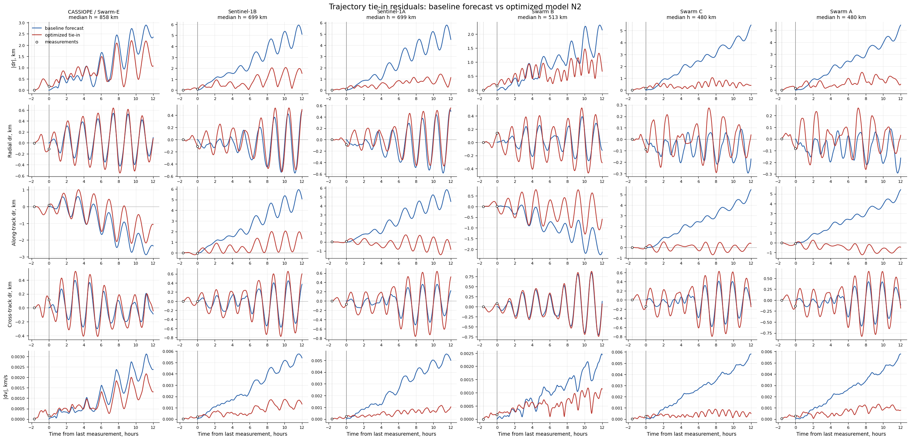
Рисунок 17. Residual visualization для лучшего N2 MIPT-forces сценария: EGM2008 (8,8), NRLMSISE-00, Sun/Moon, SRP, интегратор dop853. Синий цвет - baseline forecast от последнего измерения, красный - optimized tie-in, черные маркеры - tie-in measurements.
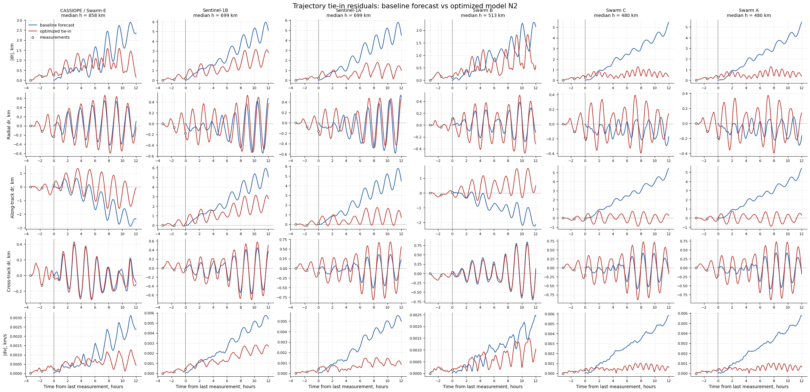
Рисунок 18. Residual visualization для N3 MIPT-forces сценария с тремя измерениями в tie-in окне. Цвета совпадают с рисунком 12: синий - baseline, красный - optimized, черные маркеры - измерения.
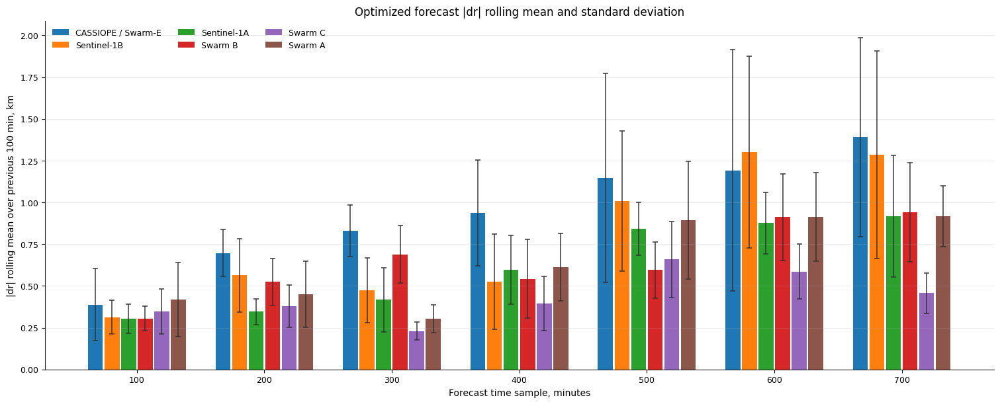
Рисунок 19. Сжатая столбчатая сводка optimized N2 MIPT-forces результата. По оси x отложены 100-минутные окна прогноза, столбцы показывают средний |dr|, error bars - стандартное отклонение; цвет задает спутник.
После того как продвинутая модель дала лучший результат, были сделаны отдельные эксперименты серии 5_..., чтобы понять, что именно дает выигрыш.
В 5_atmosphere_model_importance_N2_mipt_forces.ipynb сравнивались две модели после независимой LS-оптимизации:
Сводка по |dr| показала, что NRLMSISE-00 дает явное улучшение для Sentinel-1B:
Sentinel-1B:
exponential: mean |dr|=2.715 km, final |dr|=4.912 km, max |dr|=5.461 km
NRLMSISE-00: mean |dr|=0.811 km, final |dr|=1.530 km, max |dr|=2.067 kmДля остальных спутников различие было небольшим. Например, для Sentinel-1A mean |dr| был 0.606 km у экспоненты и 0.615 km у NRLMSISE-00; для CASSIOPE 0.954 km и 0.945 km. Поэтому вывод ограниченный: NRLMSISE-00 может быть критичен для отдельных объектов и условий, но в текущем наборе из 6 спутников основной выигрыш продвинутой модели не объясняется только атмосферой.
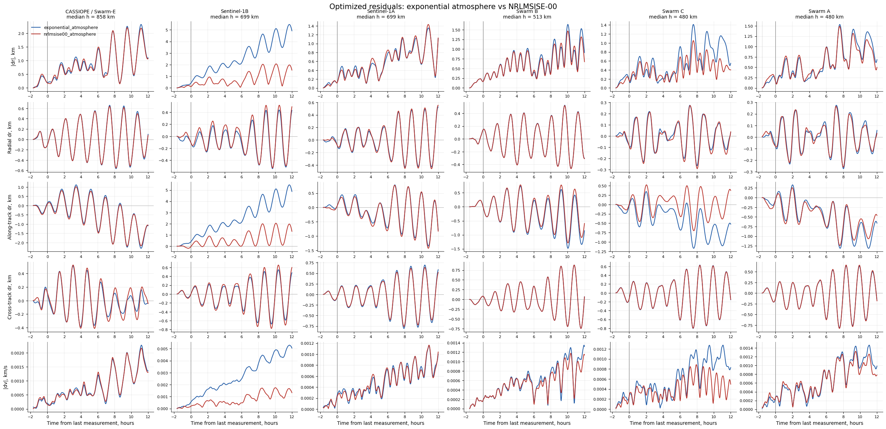
Рисунок 20. Сравнение двух атмосферных моделей после независимой LS-оптимизации: экспоненциальная атмосфера и NRLMSISE-00. Цвета кривых соответствуют двум моделям в легенде; baseline не отрисован.
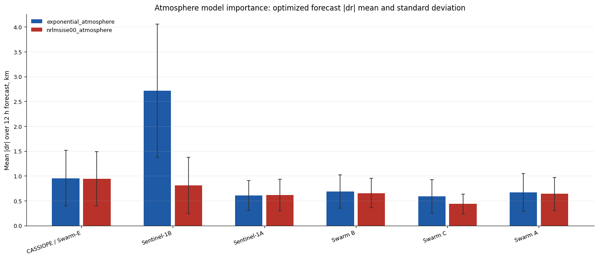
Рисунок 21. Компактная сводка влияния атмосферы: для каждого спутника показаны два столбца - экспоненциальная атмосфера и NRLMSISE-00. Высота столбца - среднее |dr| на 12-часовом горизонте, error bars - стандартное отклонение.
В 5_egm2008_degree_importance_N2_mipt_forces.ipynb сравнивались:
J2 модель;(2,2);(4,4);(8,8);(12,12);(24,24).Все варианты проходили независимую LS-оптимизацию. Это важно: оптимизация начального состояния, баллистических коэффициентов и scale factors может частично компенсировать различия между моделями сил.
Результат: переход от J2 к EGM2008 дает заметное улучшение. Но дальнейшее увеличение степени/порядка не дает монотонного и устойчивого выигрыша. Например, для CASSIOPE:
| Модель | mean |dr|, km |
final |dr|, km |
max |dr|, km |
|---|---|---|---|
| J2 | 2.035 | 1.214 | 5.783 |
EGM2008 (2,2) |
1.113 | 1.339 | 2.977 |
EGM2008 (8,8) |
0.945 | 1.072 | 2.198 |
EGM2008 (24,24) |
1.477 | 2.272 | 3.557 |
Для Sentinel-1B:
| Модель | mean |dr|, km |
final |dr|, km |
max |dr|, km |
|---|---|---|---|
| J2 | 1.270 | 3.221 | 3.235 |
EGM2008 (2,2) |
0.653 | 0.833 | 1.570 |
EGM2008 (8,8) |
0.811 | 1.530 | 2.067 |
Вывод: на текущем горизонте 12 часов и при tie-in оптимизации важнее сам переход от простой осесимметричной J2-модели к body-fixed гармоническому полю с долготными членами степени 2. Высокие степени (8,8), (12,12), (24,24) в этой постановке не дали надежного дополнительного выигрыша. Это не доказывает, что высокие гармоники физически не важны; скорее, их вклад на данном горизонте может компенсироваться оптимизацией начального состояния и параметров.
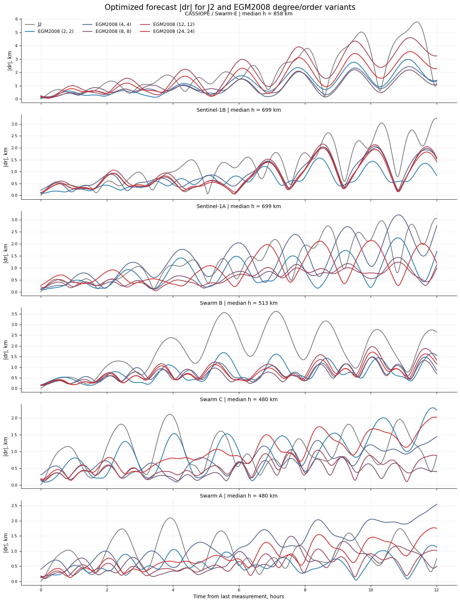
Рисунок 22. Сравнение моделей гравитационного поля после независимой LS-оптимизации. Серый цвет соответствует J2, остальные цвета - вариантам EGM2008 с разными (degree, order); на каждой оси показан |dr| для одного спутника.
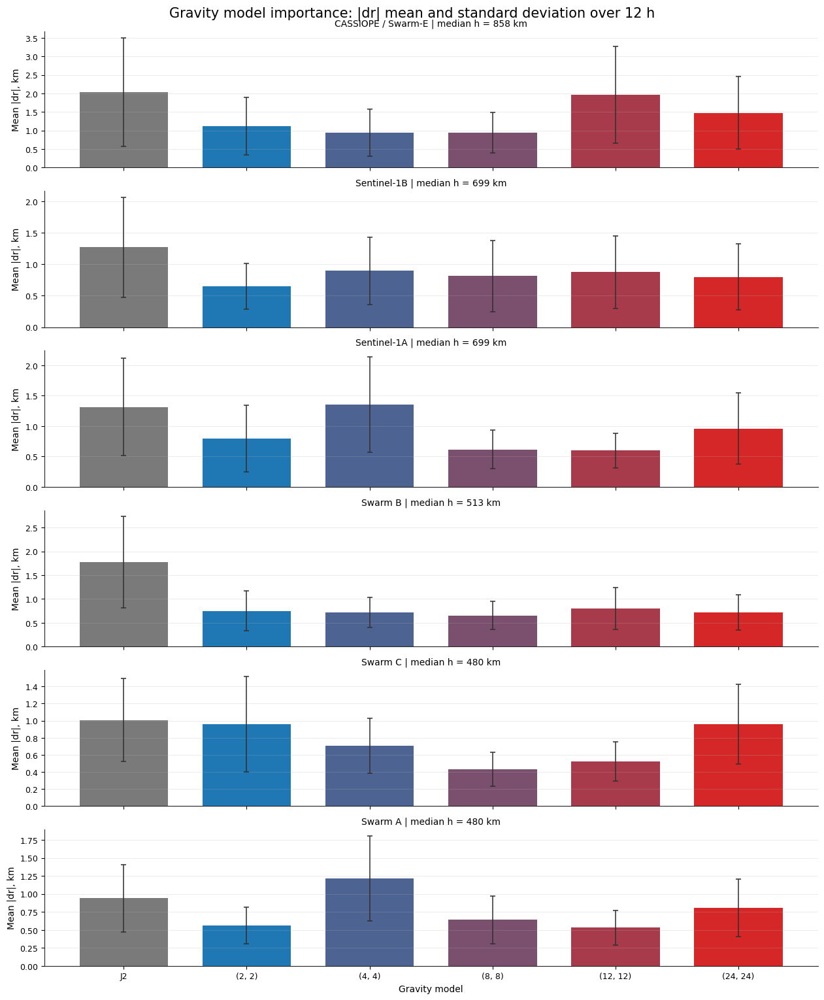
Рисунок 23. Компактная сводка влияния гравитационного поля. Серый столбец - J2, цветовая градация от синего к красному - EGM2008 от грубого (2,2) к более детальному (24,24). Высота столбца - mean |dr|, error bars - std |dr|.
Наилучший практический результат в рамках проведенного исследования дали ноутбуки:
4_trajectory_tie_in_optimization_N2_mipt_forces.ipynb;4_trajectory_tie_in_optimization_N3_mipt_forces.ipynb.Итоговая рекомендуемая постановка для дальнейшего развития:
Данные:
2-3 последних измерения state vector [r, v]
координаты: m
скорости: m/s
Оптимизация:
scipy.optimize.least_squares
loss = "soft_l1"
N_MEASUREMENTS = 2 как базовый дешевый режим
N_MEASUREMENTS = 3 как контрольный режим
оптимизировать координаты, скорости, Cd*A/m, Cr*A/m
anchor последнего измерения: LAST_MEASUREMENT_OBSERVATION_SCALE = 0.2
Динамика:
integrator = "dop853"
earth_gravity_model = "egm2008"
gravity_max_degree = 8
gravity_max_order = 8
density_model = "nrlmsise00"
third_body_sun = True
third_body_moon = True
solar_radiation_pressure = True
srp_shadow_model = "none"
earth_radiation_model = "none"
relativity_model = "none"
tide_model = "none"Практический результат: для 6 спутников НОО на горизонте 12 часов optimized |dr| в N2 MIPT-forces сценарии оказался не хуже 2.198 km по максимуму среди всех спутников. Это существенно лучше раннего уровня порядка ~6 km и достаточно мало по сравнению с грубой оценкой средней трехмерной характерной длины между отслеживаемыми объектами мусора в НОО.
Сравнение с оценкой из раздела 1.1 показывает запас по порядку величины. Даже для самой плотной из приведенных грубых оценок - популяции 1 mm-1 cm в оболочке 500-900 km - характерная длина составляет L ~ 12 km. Ошибка прогноза около 2 km примерно в 6 раз меньше этой величины. Для объектов 1-10 cm и >10 cm характерные длины еще больше (~59 km и ~167 km в той же оболочке), поэтому достигнутая точность достаточна для сужения области поиска и последующей идентификации объекта по повторному радиолокационному наблюдению. Это не отменяет необходимости учитывать орбитальную плоскость, относительную скорость и неопределенность измерений, но по пространственному масштабу результат находится ниже минимальной оценки L.
Основные ограничения результата:
Исходные reference данные хранятся в data/ и в ходе подготовки отчета не изменялись. Тяжелые оптимизационные ноутбуки не перезапускались: использованы сохраненные outputs. Изображения для отчета сохранены в reports/assets/. Для Plotly-графиков из 1_orbit_propagation_demo.ipynb созданы статические Matplotlib-версии по уже сохраненным данным графиков.
Проверяемые артефакты:
reports/final_research_report.md - этот отчет;reports/assets/fig_01_orbit_3d_static.png;reports/assets/fig_01_ground_track_static.png;reports/assets/fig_02_*.png;reports/assets/fig_03_*.png;reports/assets/fig_04_*.png;reports/assets/fig_05_*.png.Для перевода в LaTeX/PDF следующий шаг - заменить относительные ссылки на изображения командами \includegraphics, перенести таблицы в tabular и оформить источники как bib или ручной список литературы.